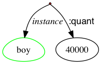
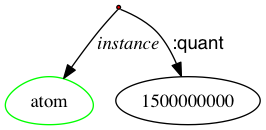
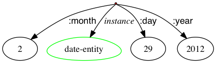
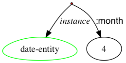
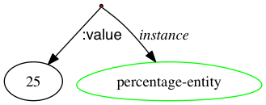

The boy wants the girl to believe him.
(w / want-01
:ARG0 (b / boy)
:ARG1 (b2 / believe-01
:ARG0 (g / girl)
:ARG1 b))
The boy has a desire to be believed by the girl.
(d / desire-01
:ARG0 (b / boy)
:ARG1 (b2 / believe-01
:ARG0 (g / girl)
:ARG1 b))

The girl adjusted the machine.
(a / adjust-01
:ARG0 (g / girl)
:ARG1 (m / machine))
The killing took place yesterday.
(k / kill-01
:time (y / yesterday))
The boy must not go.
(o / obligate-01
:ARG2 (g / go-02 :polarity -
:ARG0 (b / boy)))
There is no possibility that the boy will go.
(p / possible :polarity -
:domain (g / go-02
:ARG0 (b / boy)))
The girl is sad.
(s / sad
:domain (g / girl))
the sadness of the girl
(s / sad
:domain (g / girl))
The boy saw the girl who wanted him.
(s / see-01
:ARG0 (b / boy)
:ARG1 (g / girl
:ARG0-of (w / want-01
:ARG1 b)))
The boy is likely to go.
(l / likely
:domain (g / go-02
:ARG0 (b / boy)))
The boy does n't think the Yankees will win.
(t / think-01
:ARG0 (b / boy)
:ARG1 (w / win-01 :polarity -
:ARG0 (t2 / team :wiki "New_York_Yankees"
:name (n / name :op1 "Yankees"))))
the comment is inappropriate
(a / appropriate :polarity -
:domain (t / thing
:ARG1-of (c / comment-02)))
What did the girl find?
(f / find-01
:ARG0 (g / girl)
:ARG1 (a / amr-unknown))
The boy 's destruction of the room
(d / destroy-01
:ARG0 (b / boy)
:ARG1 (r / room))
British investor
(p / person
:ARG0-of (i / invest-01)
:mod (c / country :wiki "United_Kingdom" :name (n / name :op1 "Britain")))
chip maker
(o / organization
:ARG0-of (m / make-01
:ARG1 (c / chip)))

The soldier was aware of the battle.
(r / realize-01
:ARG0 (s / soldier)
:ARG1 (b / battle))
The boy took a bath.
(b / bathe-01
:ARG0 (b2 / boy))

The nation defaulted after the war.
(d / default-01
:ARG1 (n / nation)
:time (a / after
:op1 (w / war)))
The man died between the house and the river.
(d / die-01
:ARG1 (m / man)
:location (b / between
:op1 (h / house)
:op2 (r / river)))
He was a participant in the scheme.
(p / participate-01
:ARG0 (h / he)
:ARG1 (s / scheme))
According to government sources, the killing happened yesterday.
(s / say-01
:ARG0 (s2 / source
:mod (g / government-organization
:ARG0-of (g2 / govern-01)))
:ARG1 (k / kill-01
:time (y / yesterday)))
The boy came and left.
(a / and
:op1 (c / come-01
:ARG1 (b / boy))
:op2 (l / leave-01
:ARG0 b))
The boy is a hard worker.
(p / person
:ARG0-of (w / work-01
:manner (h / hard))
:domain (b / boy))
the earlier plan
(p / plan
:time (e / early
:degree (m / more)))
the girl is taller than the boy
(t / tall
:degree (m / more)
:domain (g / girl)
:compared-to (b / boy))
naval officials
(p / person
:ARG0-of (h / have-org-role-91
:ARG1 (n / navy)
:ARG2 (o / official)))
Mollie Brown
(p / person :wiki "Margaret_Brown"
:name (n / name :op1 "Mollie" :op2 "Brown"))
40,000 boys
(b / boy :quant 40000)
a billion and half atoms
(a / atom :quant 1500000000)
several hundred boys
(b / boy
:quant (s / several :op1 100))
between four and five thousand boys
(b / boy
:quant (b2 / between :op1 4000 :op2 5000))
ten miles
(d / distance-quantity :quant 10
:unit (m / mile))
about 10 miles
(a / about
:op1 (d / distance-quantity :quant 10
:unit (m / mile)))
February 29, 2012
(d / date-entity :year 2012 :month 2 :day 29)
April
(d / date-entity :month 4)
Summer 2011
(d / date-entity :year 2011
:season (s / summer))
25%
(p / percentage-entity :value 25)
